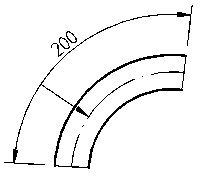
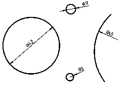
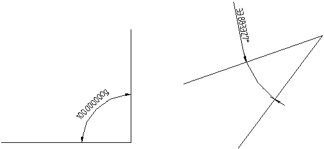

Voor maataanduidingen zijn er eisen voor:
De maataanduiding van rechte delen aangeven met een maatlijn met haaks daarop twee hulplijnen. De maatlijn en de hulplijn doortrekken tot 2 mm voorbij het snijpunt. Op het snijpunt een lijntje van 2 mm, onder 50 g / 45° plaatsen. De afstand tussen een hulplijn en het model bedraagt 2 mm. Alle lijnen hebben een dikte van 0,18 mm.
voorbeeld:

De maataanduiding van de booglengte aangeven met een maatlijn evenwijdig aan de boog bij voorkeur buiten de afbeelding met haaks daarop twee hulplijnen
De hulplijn doortrekken tot 2 mm voorbij het snijpunt.
Plaats op het snijpunt een pijlpunt van 2.5 mm.
De afstand tussen de hulplijn en het model bedraagt 2 mm.
De maatlijn voorzien van een referentielijn met een pijlpunt van 2.5 mm haaks op de maatlijn. De referentielijn wijst de bij de bemating behorende boog aan.
Alle lijnen hebben een dikte van 0.18 mm.
voorbeeld:

Cirkels / bogen (diameter/straal)
De maataanduiding van de straal van een cirkel aangeven met een maatlijn vanuit het middelpunt en een pijlpunt rakend aan de cirkel. Plaats op het snijpunt een pijlpunt van 2.5 mm.
De maataanduiding van de diameter van een cirkel aangeven met een maatlijn door het middelpunt en twee pijlpunten rakend aan de cirkel. Plaats op het snijpunten een pijlpunt van 2.5 mm.
Indien, bij een kleine straal of diameter, de ruimte voor de pijlpunt(en) en de getalswaarde ontbreekt, mogen deze ook aan buitenzijde van de cirkel of boog worden geplaatst.
De getalswaarde bij een diameter voorzien van het symbool: Ø
De getalswaarde bij een diameter voorzien van het symbool: R
voorbeeld:

De maataanduiding van een hoek aangeven met een boog voorzien van 2 pijlpunten van 2.5 mm. Alle lijnen hebben een dikte van 0,18 mm. De getalswaarde van de hoek aangeven in het gekozen gradenstelsel (400 graden stelsel of 360 ° stelsel. ) De getalswaarde van de hoek aanvullen met "g" voor een hoek in het 400 graden stelsel en " ° " voor een hoek in het 360° stelsel. Indien,bij een kleine hoek, de ruimte voor de pijlpunten en de getalswaarde ontbreekt, mogen deze ook aan buitenzijde van de hoek worden geplaatst.
voorbeelden:

Plaatsing en lettertype van bemating
Waar mogelijk de getalswaarde van de maat van een recht deel of boog/cirkel gecentreerd op de maatlijn plaatsen. De getalswaarde 1 mm boven de maatlijn plaatsen Een maat moet van links naar rechts of van onder naar boven leesbaar zijn (zie ook paragraaf 2.4.3). Het lettertype voor bemating heeft een letterhoogte van 2,5 mm.
De nauwkeurigheid van de aangegeven maten is afhankelijk van de eenheid:
| type bemating | eenheid | aantal siginificatie cijfers achter het decimaalteken | voorbeelden |
|---|---|---|---|
| lineair | millimeters (mm) | 0 | 1260 |
| lineair | meters (m) | 2 of 3 * | 110.23 1200.334 |
| hoeken | graden (360) | 6 | 75.345667° |
| hoeken | graden (400) | 6 | 86.566554g |
| hoogtematen(peilmaten) | meters (m) t.ov N.A.P. | 3 | +11.500 -1.350 |
| kilometering | kilometers (km) | 3 | km 110.334 |
* De nauwkeurigheid is afhankelijk van de gemaakte (project) afspraken.
De punt ( . ) als scheidingsteken gebruiken. Bij het gebruik van een tekening altijd de geschreven maten gebruiken. Opmeten en omrekenen via de schaal is niet toegestaan. Het is niet toegestaan onderstreepte maten met de vermelding "Onderstreepte maten zijn niet op schaal getekend" toe te passen.